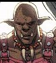

prev |
home |
next
Chapter 8: The Chiliad Arch
4837 - Shrsholn - Mon Feb 24, 2003 5:08pm
THREAD 4: Dijani
"I have one question for you." Dijani said, looking at the wizard
and the Orc. "Do you think Trask will also enter?" Dijani asked, intent
upon her goal.
"I can easily enough conjure up facsimilies of ourselves, possessing
even a shadowy semi-substance to use as bait while we wait invisibly
ready to kil - - too capture them for your assignment, and you
bounty." Bjolfe offers looking at Dijani then the Orc. He then
adds, "Then, I shall depart for my scried destination -- with your
leave, of course. If you deem that a reasonable use of my power,
tell me -- but realise that that will nearly deplete my personal
Essence -- and I have too little time to extract any more from my
alchemical stores."
The Orc looks on for a brief moment, then offers, "In my many travels
I have seen a pair of mages cooperate in an especially arduous
casting. Is that possible with the two of you?"
Bjolfe looks at Dijani and asks, "What do you say, old girl?"
4844 - ebony_of_nightshade - Wed Feb 26, 2003 1:24pm
THREAD 4: Dijani
"It sounds like the reasonable choice." Dijani said softly, readying
herself for the expense of her energy.
4855 - Shrsholn - Wed Mar 19, 2003 10:50pm
THREAD 4: Dijani
HoT = Chiliad Arch: Rock Around the Clock
In fact the two mages cooperate, and in so doing, more evenly tax
their essence for the effect of creating simulacra...
The rainbowed light plays upon the blue-grey stone of the gate
chamber.
The three copies seem identical in every way, and quickly stir to
consciousness after the three of you have hidden away behind
excavation debris.
Quickly the six out you hear the alarm as Gremlin troops engage with
Trask, Dritauge, and their goons.
The unreal spell casters wage a phantasmal battle with the enemy
troops while pressing ever nearer to the gate as it's clockwork
nature begins to stir to life.
The magickal distortions that had devastated the group before
entering Bjolfe's tower seem to have been harnesed in some fashion to
fuel the gateway's operation.
As Trask and Dritauge close on the faux trio, a second and third
element of Gremlins, some mounted on small lizards, begin a pincer
movement preventing the enemy's retreat -- only the gateway offers
egress.
"Now?!" the Orc asks impatiently.
[...]
5082 - tarandracon - Fri Jun 20, 2003 3:41pm
Editor's Note: Taran Dracon's entry into this game was not
without prior set up or controversy, for that matter. However, this post
was the first game post that wasn't later recalled, revised, or otherwise
challenged or corrected! After much debate (with myself) I elected not to
include the out of character posts surrounding Taran's transition from
khara_khang's T&T universe (most recently seen in the Pirate Blade of
Rhanian adventure) and into Shrsholn's T&T universe.
THREAD 6: Taran
Taran goes solo (and to Shrsholn-world)
From message 4836
(a post in "The Pirate Blade of Rahnian" adventure epilogue):
[[ooc]] Bela will offer to cast a Whammy on Taran's sword. If the GM
of his next adventure allows the spell to remain on the blade until
its first use, then it may help. If not, then Bela will give Taran
10GP and 50 SP to help with lodging on his journey.
[[Taran "Sniper-Orc" Dracon]]
Note: (Taran accepted the offer Bela
generously made in post 4836 to
cast a Whammy on Taran's broad sword, and Shrsholn agreed that it
would last until the blade's next use.)
Bela Oxmyx, elf, wizard, co-adventurer and friend, declined to help
Taran Dracon, orc mercenary, in his search for
Cambrea, the she-elf
whom Taran had rescued from enslavement,
who had shown her gratitude
rather unexpectedly, and who had left without a trace with the
treasure spoils of Taran's adventure. The muddy green-skinned,
tusk-faced crossbowman had all but written off any hope of finding
Cambrea in the days since he'd last seen her. If she were intent on
hiding from him, he had no doubt she would be successful, short of
Taran enlisting the aid of some powerful wizard. Not quite feeling
bold enough to walk to the front gates of the Death Goddess' fortress,
and not knowing the current whereabouts of Arahk Gnahk, who might not
help him anyway, Taran instead decided to seek out the sailing ship,
The Night Gail, where he had left a backpack full of magic items and
other belongings. He figured it would be a trivial quest that would
serve to take his mind off his troubles, and of course get his stuff
back. Going alone would allow him to concentrate on his own survival
skills and learn more about his symbiont. At least, that was the
plan.

When he could not find evidence of her having docked anywhere nearby,
Taran told his father Oother of his plans, submitted a leave of
absence from the warren, and deliberately did not tell Jax where he
was going, for fear his brother would try to stop him. He suited up
in his lamellar armor, strapped on his Uncle Dracon's broad sword, his
Tally mercenary over-and-under crossbow, his Arahk Gnahk-enchanted
quiver of crossbow bolts, grabbed a lantern from the warren, and set
out. On a mostly empty stretch of shore along the Khazan coast, Taran
summoned the power of his Talo Tattoo worm to open a portal into the
belly of the Night Gail. [-3 Dex, -3 Int]
No incoming rush of water ensued, as Jax wisely pointed out might be
the case if the ship had sunk, which was why Taran had chosen a spot
of beach for the portal. He hadn't told Jax that he was actually
going to do it, so Jax had no opportunity to try to stop him from his
"fool's errand."
"Just give it up, brother!" Jax had spat, cursing, back in the bowels
of Dracon Warren, when Taran brought up the possibility of the quest.
Jax had made no secrets about how he despised the worm which had
attached to Jax's own self, and had since been expelled by magic. "A
few potions and a bag of trinkets isn't worth this fool's errand."
"Maybe you're right, my ever stinking brother," Taran had replied
sincerely. But Taran didn't heed Jax's wise (for an orc) brother's
advice, deciding instead that he'd needed a change of pace from the
life of a group mercenary, signing up for every adventure that arose.
Taran set out on his own for the first time since Arahk Gnahk himself
commissioned him on a quest to deliver a sealed message to Captain
Stonenose Glump almost three years ago, a message he never was able to
deliver.
Focusing his thoughts back to the present, and peering into the newly
opened portal, Taran spied only darkness, expecting nothing different
as his intended destination was the belly of the ship. With a lantern
in hand oustretched in front of him, Taran boldly stepped through the
portal.
5091 - Shrsholn - Tue Jun 24, 2003 5:13pm
THREAD 6: Taran
[[Nice writing, BTW]]
Taran immediately realizes that the ground upon which he stands is
not that of a ship's planking. The cold stone of the room suggests a
large structure.
His Orcish red-eye-sight allows him to faintly see via a sliver of
light and different temperatured air that trickles in from 'beyond'
this room.
Fairly muffled sounds originating outside, prick-up his ears.
Nothing more can be said.
[[Okay give me you find doors roll, and, um...er...]]
-Shrsh'
5149 - ebony_of_nightshade - Fri Jul 11, 2003 2:23pm
THREAD 4: Dijani
"Now!" Dijani said, her being a bit subdued by the magical energies
expended, but her physical adrenaline kicking in a powerful surge of
new power to harvest.
The orc and the mage headed for Trask, intent upon his capture.
5152 - Shrsholn - Fri Jul 11, 2003 8:21pm
THREAD 4: Dijani
TRASK: "Damn! A ploy!"
DRITAUGE: <CENSORED>
ORC: Fools!
-- The orc transforms into a dark skinned man in scarlet accented
royal violet robes.
: "I shall take you two personally to kneel before our Empress, dogs."
---
Dijani and Bjolfe both recognize him as Khara Khang.
---
Dritauge begins to knock an arrow with blinding speed, but is
calcified on the spot.
Trask makes way for the mouth of the gate...
5155 - ericeick - Mon Jul 14, 2003 1:24am
Editor's Note: Part of this post was in reply to posts in
the Thorne/Rogan/Amos thread, and that part is placed there. Part of this
thread was in reply to posts in the Dijani/Taran thread, and that part is
placed here.
Game As A Non Player I Cannot Use Title Of In A Post -
Comments
Taran: "Maybe you're right, my ever stinking brother," Taran had
replied sincerely. But Taran didn't heed Jax's wise (for an orc)
brother's advice, deciding instead that he'd needed a change of pace
from the life of a group mercenary, signing up for every adventure
that arose.
See, character wisdom works much better when someone else notices it.
`Cept the poster wrote the other orc's wise dialogue as well, so
maybe this isn't such a good example...
5158 - ebony_of_nightshade - Mon Jul 14, 2003 2:48pm
THREAD 4: Dijani
Dijani was determined not to lose her prey--not when she was this
close. While in close pursuit, her magical essence diminished quite
a bit, she yanks a dagger from one of her sheaths as best she can and
throws it at Trask. "If he makes it to that blasted gate," she
thinks to herself, "I will follow him!"
5170 - tarandracon - Sun Jul 20, 2003 3:57pm
THREAD 6: Taran
[[Taran]] The orc would-be-scavenger slowed his breathing to fine tune
his senses to determine as much as he could from his surroundings. He
silently cursed his lantern which must have blown out from his
traversal through the portal, and set it down on the stone floor, as
silently as he could. He scanned in the direction of the small amount
of light and temperatures he could see with his HotVision(TM) and the
sounds from outside whatever chamber he was in, looking for any exits.
[[I assume a find doors roll means a saving roll: 1,1,6,2 = 10, see
e-mails from http://daggerford.com/dice/diceserver.asp to verify.]]
While he searched, he unstrapped his broad sword, fearing he had just
got himself into trouble... again.
"Mebbe Jax was right. He never cared one way or another for this
magic worm, and is probably happier now that he's got rid of it. But
here I am continually using it, getting myself into trouble." He
muttered this to himself, then argued, "but I never thought I'd be a
magic using orc, and here I am. Kinda groovy, if you ask me, which I
guess I am, talking to myself and all, ugh."
5242 - Shrsholn - Tue Aug 12, 2003 4:34am
THREAD 4: Dijani
Dijani was determined not to lose her prey--not when she was this
close. While in close pursuit, her magical essence diminished
quite
a bit, she yanks a dagger from one of her sheaths as best she can
and
throws it at Trask. "If he makes it to that blasted gate," she
thinks to herself, "I will follow him!"
[Hi. Okay, let's get a L3 DEX SR to hit him.]
5243 - Shrsholn - Tue Aug 12, 2003 4:44am
THREAD 4: Dijani, now merges with...
THREAD 6: Taran, to become...
THREAD 7: Dijani, Taran
[[I assume a find doors roll means a saving roll: 1,1,6,2 = 10, see
e-mails from http://daggerford.com/dice/diceserver.asp to verify.]]
While he searched, he unstrapped his broad sword, fearing he had just
got himself into trouble... again.
Taran finds a door, and cautiously opens it to find a flambeaux-lit
hall. Adjacent to the darkened room he appeared in, Taran sees
another, well lit, from whence sounds of battle emmanate.
Another, astonishing sight, is that of a very familiar looking orc,
transform into a very familiar Khara Khang!
A dagger whirls past Khang, and a cloaked figure begins to run past
him, as if in pursuit of a mutual enemy.
Gremlin, and human dead litter the mouth of this battle laden room.
5245 - ebony_of_nightshade - Thu Aug 14, 2003 8:44pm
THREAD 7: Dijani, Taran
DEX = 17 or 18 (I have two different dex stats in my files, do you
recall which one is right?)
ROLLS: 4, 2
(4+2) + 18 =24 < 30 DOH! No go.
IC: Seeing her dagger whizz by his head (whizzzzzzzzzz!) She aims
another as rapidly as possible. ;)
5252 - tarandracon - Sun Aug 17, 2003 11:15pm
THREAD 7: Dijani, Taran
[[Taran]] "WRAUGHK!" Taran emitted in spite of himself in surprise at
the sight of first Arahk Gnahk himself, then the undisguised Khara
Khang. In the presence of such terrible might, Taran balked,
confused. The last time he had seen Arahk....
"Ah frak!" Taran interrupted himself aloud, forgoing a trip down
memory lane and abandoning attempts to sort out what his eyes had just
seen, to instead focus on the present. Quickly he peered down the
hall toward the direction of the source of both the mid-air dagger and
the cloaked person, and then down the other direction, presumably at
the intended target of the thrown blade. Setting down his lantern
just inside the dark room, he quickly unholstered his over and under
crossbow, pulled back its strings with two bolts from his enchanted
quiver, and jumped into the fray, ready at once to enter the battle on
the side of the famed orc shaman.
"Taran Dracon, once again at your service!" he shouted to Arahk/Khang.
5369 - Shrsholn - Fri Oct 24, 2003 4:45pm
THREAD 7: Dijani, Taran
[So sorry about letting this slip...]
More than a bit surprised to see Taran, here, his greeting is a bit
awkward.
"This one here. Stop him!" he points to Trask.
The melee continues, and now, several of Trask's troops have flung
themselves through the portal. Willim Dritauge has reached the edge,
and is frantically calling to Spurlious.
* Crossbow SR: L2 to strike
* Melee: DX SR L0 to close on Trask and enter melee combat next Round.
-Shrsh'
5370 - Shrsholn - Fri Oct 24, 2003 4:49pm
THREAD 7: Dijani, Taran
Dijani/IC: Seeing her dagger whizz by his head (whizzzzzzzzzz!) She aims
another as rapidly as possible. ;)
It will remain L3 unless you close in, then it will drop to L2.
-Shrsh'
5376 - ebony_of_nightshade - Fri Oct 31, 2003 3:02pm
THREAD 7: Dijani, Taran
Dijani took another seven rapid steps as she raced to try to close
the gap, then fired another dagger. The adrenaline pumped through
her veins as she chanted her war chants under her breath. They made
her feel powerful, primal.
[rolls: 6. Is she close enough yet to drop to L2?]
5466 - tarandracon - Fri Jan 9, 2004 5:49pm
THREAD 7: Dijani, Taran
This post is intended to summarize the Hands of Thieves / Chiliad Arch
play-by-post game run by Shrsholn. Shrsholn has noted offline that
this game is nearing its conclusion and therefore will not have room
for new players after all. Becuase of the paucity of posts of late I
needed a refresher on the game so here it is for all to appreciate--or
at least for Shrsholn, Dijani and me to use to continue.
Editor's Note: This is in reference to the recent posts by
some new group members who had wanted to join the game.
Also, this summary does
not include a summary of the ongoing Thorne/Rogan/Amos thread.
====
Here are the current characters:
- (PC) Dijani the elf Rogue
- (NPC) Bjolfe (60s old man) -- powerful wizard
- (NPC) Bjofle's gremlins
- (NPC) Spurilous Trask (wizard, young elf) -- MAIN BAD GUY
- (NPC) Willam Driturge (blindfolded archer, ally of Trask)
- (NPC) Trask's minions
- (NPC) Khara Khang (nee orc, in room with gate)
- (PC) Taran the orc warrior
====
Here is a recent events timeline:
0. A call is made by the Death Goddess for hunting down desecrators of
her temple. New recruit Throst the dwarven wizard (player character)
accepts the mission to go after Trask and the thieves. Elise the
minotaur/elf (player character) accepts the mission, too. Throst is
killed by some poison mist in an underground cave. Elise meets up
with Dijani the rogue (player character), who was searching for
Bjolfe, in the same cave tunnels, and they soon meet up with Trask,
his henchman Dritauge, and Bjolfe the wizard. All the NPCs that had
gone along with Throst and Elise have since been killed or
disappeared, except for a lone and unnamed orc henchman.
1. Trask kills Elise in combat, after Elise tries to claim her bounty
on him as the main object of the Hands of Thieves quest. Bjolfe
captures Dijani and the orc in a force bubble.
2. Driturge wants Dijani for himself, while Bjolfe dismisses orc as
not worthy of attention.
3. But Bjofle won't let Driturge have Dijani as she reminds him of his
daughter. (Ooh the mystery!)
4. Bjofle brings the orc and Dijani inside a force bubble into a room
with the Chiliad Arch, a magical gateway through time and space.
5. Trask casts spell and deactivates force bubble, throws a box at Bjofle.
6. Dijani casts force wall to protect her and orc and Bjolfe against
box which explodes.
7. Bjolfe reveals to Dijani that his plan was to use the arch to find
someone who had disappeared a long time ago, and says he only had
Trask and Driturge along for help and to speed things along. He says
they can either go through the gate and sabotage it to foil Trask, or
try to capture Trask.
8. Bjofle and Dijani combine their essences to create simulacrum of
the three of them (including the orc) to distract Trask so they can
capture or kill him for the bounty.
9. Bjofle's gremlins attack Trask, Driturge and their goons. Trask
and Driturge close in on the faux trio, and are surrounded by more
gremlins riding lizards.
10. The real orc and Dijani sneak into the fray head to try to capture
Trask.
11. Meanwhile, Taran Dracon the orc, having recently teleported
through time, space and dimension, into a room near the action, steps
into the hallway with the arch and the battle, whereupon he sees Arahk
Gnahk the orc transform into Khara Khang the wizard, who orders him to
stop Trask.
12. Driturge tries to load an arrow but Khara Khang "calcifies" him on
the spot. Trask runs for the gate, through which some of his goons
have already run.
13. Dijani throws a dagger at Trask, which misses him, and chases
after him, throwing another dagger en route.
====
One note: in post 5152,
it says Dritauge is calcified, presumably
frozen by Khara Khang, and Trask runs for the gate. In post 5369, it
says Dritauge is at the gate, calling for Trask to follow. Obviously
Dritauge somehow became unfrozen and beat Trask to the gate. Or they
got mixed up in the confusion. In either case, this is not critical
to rectify this questionable change of positiosn, but just an
explanation for the gentle reader. We're going with the latest
positions according to Shrsholn.
====
Here are the latest posts for the Player Characters:
====
Editor's Note: Reposts of 5369 (for Taran, by Shrsholn)
and 5376 (for Dijani, by Dijani) not repeated in this archive.
====
To do:
Taran: Needs to decide what to do and roll the relevant SR.
Dijani: Nothing.
Shrsholn: Answer Dijani's question about whether she's close enough to
go from level 3 to level 2 SR, to determine if her dagger hits or not.
Pending Taran's action (below!) continue on with the show.
====
Therefore, here I go with my end of the to-do's!
====
[[Khara Khang]] "This one here. Stop him!" he points to Trask.
The melee continues, and now, several of Trask's troops have flung
themselves through the portal. Willim Dritauge has reached the edge,
and is frantically calling to Spurlious.
* Crossbow SR: L2 to strike
* Melee: DX SR L0 to close on Trask and enter melee combat next Round.
[[Taran]] Taran emits a prideful "You got it!" as he raises his over
and under crossbow to fire upon Trask.
Now orcs aren't exactly known for their reasoning capabilities, but
Taran reasons that a crossbow bolt in the back would stop someone just
fine, and if it killed him in the process, well, he'd sort out the
details later. He fires the upper bolt, aiming for the back of
fleeing person whom Khara Khang had pointed out.
[[Taran rolls: 2D6 [5 1] = 6. Note the original "L2 to strike" might
not apply if Taran's enchanted crossbow bolts are working in this
dimension. The enchantment on them is: "L0SR vs. Dex to auto-hit. As
long as Taran draws from the quiver, it will never become empty,
however if someone else takes the last bolt, the enchantment is
broken. Enchanted by Arahk Gnahk." If the enchantment works, then
this SR is successful: 6 + Dex(11) = 17 > 15 (L0SR).
Regardless of the first bolt's aim, he fires the lower bolt as soon as
he can, this time aiming for the legs, counting on the magic of the
bolts to do its job and hit right on target.
[[Taran rolls: 2D6 [1 1 3 3 1 2 ] = 11. Zing!]]
Nervously, remembering other shots from his crossbow gone horribly
wrong in the presence of other magic, he runs off after his target.
[[Given any more time for action, Taran will draw his broadsword and
fight his way to his prey.]]
====
And now, I hand the reins of this adventure back over to ye almighty
GM, the one, the only, the mighty Shrsholn.
5621 - Shrsholn - Fri Jun 25, 2004 9:52 am
THREAD 7: Dijani, Taran
NEW! -- HoT / Chiliad Arch -- BeginnEnding
As the daggers thrown strike home. The foeman, Dritauge, burst into
howling ebon flames. His incalcuably evil soul bound for some
netherhall to await final, abyssal judgement.
"Quickly! After Trask!" The Orc, Khara Kang, shouted.
D'janni and Taran snapped to attention, and without much thought but
not displeasing the Empress' lover, they jumped through the Chiliad
Arch.
Cold, dry, thin air assailed their lungs.
Their diaphragms seemed to ache at the hollowness suffered at
breathing the thin medium.
The day-lit sky was indigo at the halfway mark, but very few stars
could be seen. In their steadf were rainbowed motes of dust,
twinkling not far from the world. Shooting stars could be seen at
almost every glance.
Taking in their surroundings just a moment longer, the red, rocky
surface of the place they found themselves now...It was almost too
much.
Trask, sipping in short, shallow breaths, began to dash away.
On the horizon, some hours walk away, a huge city sprawled near an
ocean. Flying craft buzzed near-silently around it, and a few
massive airships droned overhead. One coming from, the other
departing the megatropolis.
Panting and wheezing, the unlikely pair of deputized agents pressed
on after their quarry.
---
Okay, folks, Willim Dritauge, the Rogue Khazani Internal
Intelligence Legionaire, is dead-dead-dead.
The two characters mentioned are on an other world entirely.
Not Trollworld, not Shrsholn's Trollworld.
Things work differently here...
If this is something that folks want me to run, those who have read
the TROK issue last put out and read the description of Aqmlk/Blood, let me know.
If not, then the hero and heroine are off on their own great
adventure.
Sorry for the massive dead-air season that became 'Hands of Thieves'.
I have gone through A LOT since beginning that tale.
Best to you all,
-Shrsholn aka Kyrinn
prev |
home |
next |
Page modification date: